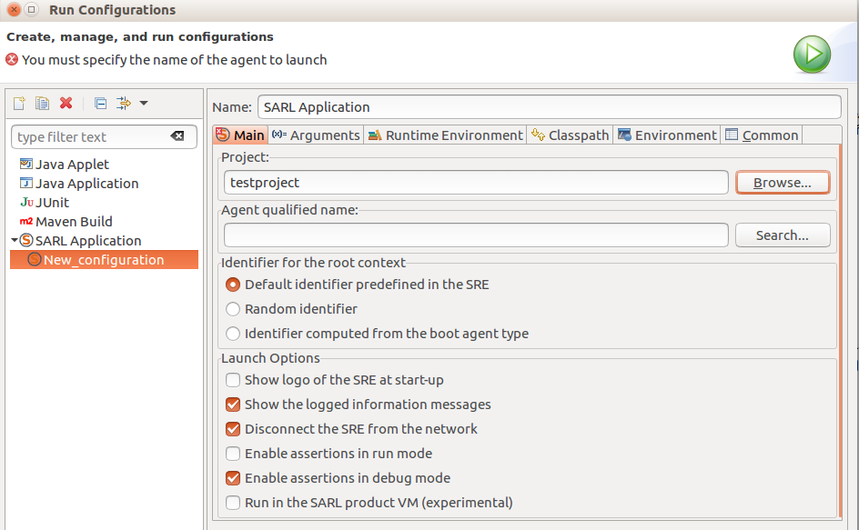
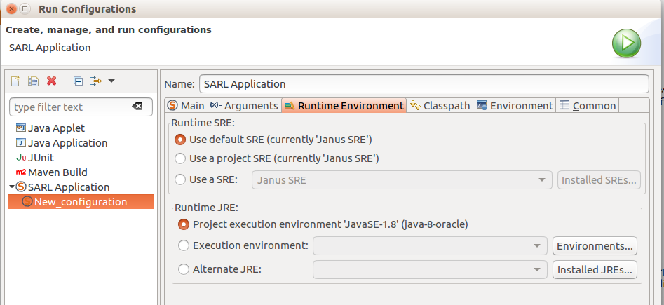
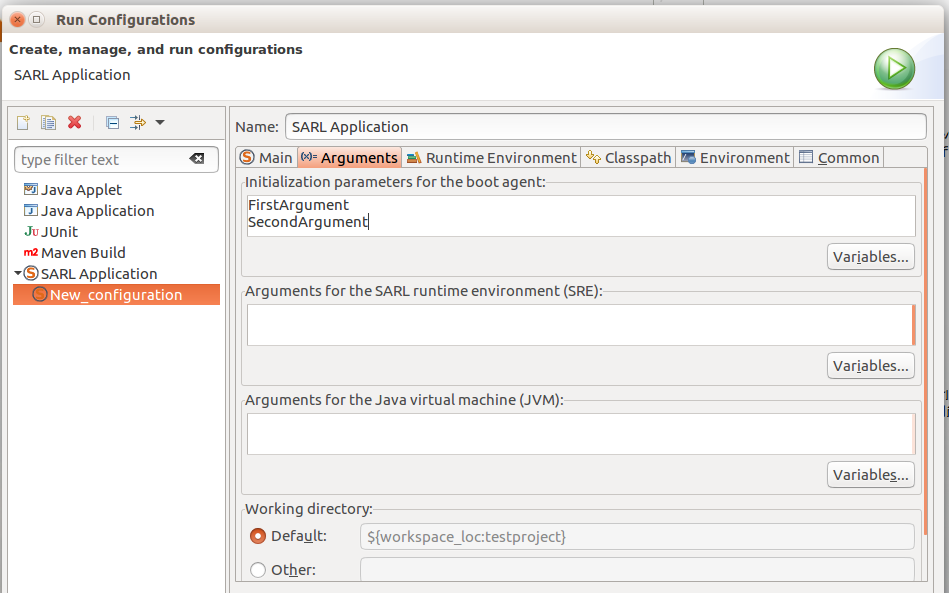
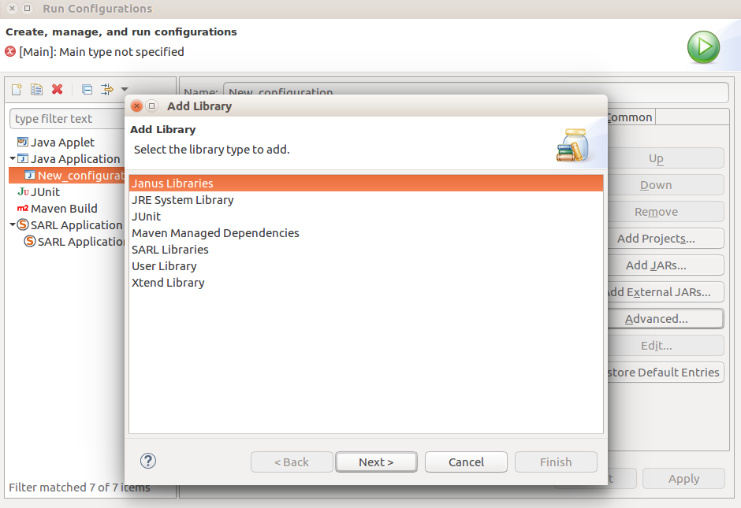
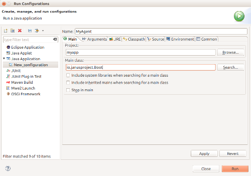

Run SARL Agent in the Eclipse IDE
- 1. Create a SARL Launch Configuration
- 1.1. Create a Java application configuration
- 1.2. Specify the agent to execute
- 1.3. Add the Janus runtime environment
- 1.4. Give parameters to the Agent
- 2. Create a Java Launch Configuration
- 2.1. Create a Java application configuration
- 2.2. Add the Janus runtime environment
- 2.3. Specify the Janus Boot agent
- 2.4. Specify the agent to execute
- 2.5. Give parameters to the Agent
- 3. Retrieve the Command Line Parameters in the Agent
- 4. What's next?
- 5. Legal Notice
For running an agent, you must launch this agent on the runtime environment. In this document, we assume that the runtime environment is the Janus platform.
Two major methods are available for launching a SARL application inside the SARL Eclipse IDE:
- Use a SARL launch configuration.
- Use a Java launch configuration.
The SARL launch configuration is recommended.
1. Create a SARL Launch Configuration
For launching the SARL agents on the runtime environment inside the SARL Eclipse IDE, you must define a Run Configuration.
1.1. Create a Java application configuration
Open the run configuration dialog box by selecting Run > Run Configurations, and create a new SARL application. You obtain a page similar to:

Change the name of the run configuration, and select the project, which is containing your agent.
1.2. Specify the agent to execute
The second step is the specification of the agent to launch. Keep in mind that you can only give one start-up agent to the runtime environment. The other agents will be spawned by the specified start-up agent.
The start-up agent is given in the Agent qualified name field of the Main tab. You must enter the fully qualified name of the agent that must be launched.

At the bottom of this page, you may change configuration options for the runtime environment.
1.3. Add the Janus runtime environment
For running your agent, you must specify a SARL runtime environment. In this tutorial, we assume that you want to use the Janus platform.
If you don't want to use the Janus platform, you must download the runtime environment that you want to use, and install it in the SARL Eclipse environment as follow. You add a SARL runtime environment (or SRE) in the Runtime environment tab. You should click on the Installed SREs button for managing the installed runtime environments (or open the corresponding preference page). After adding the SRE's JAR file, you obtain a dialog box similar to:

1.4. Give parameters to the Agent
It is possible to give arguments to the launched agent.
Indeed, all the arguments given as program arguments
are put in the parameters attribute of the Initialize event.
This event is fired when the launched agent is started.
The following example gives the values FirstArgument and
SecondArgument to the launched agent:

On this page, you could also specify the parameters to give to the SARL runtime environment or to the Java virtual machine.
2. Create a Java Launch Configuration
For launching the SARL agents on the Janus runtime environment inside the Eclipse IDE, you must define a Run Configuration.
This section is dedicated to the definition of a launcher for Java application (the standard and classical launching configuration in the Eclipse community).
2.1. Create a Java application configuration
Open the run configuration dialog box by selecting Run > Run Configurations, and create a new Java Application. You obtain a page similar to:

Change the name of the run configuration, and select the project, which is containing your agent.
2.2. Add the Janus runtime environment
For running your agent with the Janus runtime environment, you must add the Janus library in the class path.
For adding the Janus library, select the Classpath tab, and User Entries. Click on the Advanced button. You will be able to select the type of classpath entry to add. Select "Add Library".

Then, you are able to select the library for the Janus runtime environment.

2.3. Specify the Janus Boot agent
You can go back to the Main tab, and enter the Main class.
The main class must always be io.janusproject.Boot.

2.4. Specify the agent to execute
The last step is the specification of the agent to launch. Keep in mind that you can give to the Janus runtime environment only one start-up agent. The other agents will be spawn by the specified start-up agent.
The start-up agent is given in the Program arguments field of the Arguments tab. You must enter the fully qualified name of the agent that must be launched.

2.5. Give parameters to the Agent
It is possible to give arguments to the launched agent.
Indeed, all the arguments given as program arguments
are put in the parameters attribute of the Initialize event.
This event is fired when the launched agent is started.
The following example gives the values FirstParam and
SecondParam to the launched agent:

3. Retrieve the Command Line Parameters in the Agent
For retrieving the values passed on the command line, you must handle the Initialize event, as illustrated
by the following example:
agent MyAgent {
uses Logging
on Initialize {
println("Command line parameters: " + occurrence.parameters)
}
}
4. What's next?
In the next section, we will learn how to launch your SARL project from the command line.
5. Legal Notice
- Specification: SARL General-purpose Agent-Oriented Programming Language ("Specification")
- Version: 0.6
- Status: Draft Release
- Release: 2017-08-31
Copyright © 2014-2017 the original authors or authors.
Licensed under the Apache License, Version 2.0; you may not use this file except in compliance with the License. You may obtain a copy of the License.
You are free to reproduce the content of this page on copyleft websites such as Wikipedia.
Generated with the translator io.sarl.maven.docs.generator 0.6.0-SNAPSHOT.